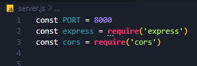

Define a Port for the Backend
The Setup
We're gonna run our backend on port 8000. We also need to go ahead
and require the packages that we just installed.
So add this to server.js...

So, we've got the express package we saved as const express.
Now we realease everything by calling it with parethesis, and save
it to an app const. This is so that we can use it throughout our
code.
So add this line...
Also, I know we are going to use json, so go ahead and use
express.json()
Add a line for using express json...
I also am forseeing cors erros, so we should go ahead and use cors()
So we app.use cors()...
Great! Thats the setup.
Now we need to listen to the port we defined.
Listen to the Port
What we do is listen out on PORT, and we'll just write a message. We
make it a callback function, where PORT is the first parameter, and
the console.log is the second parameter.
So call app.listen and add the parameters...
You see that I console logged 'hi', and nodemon picked up both
changes...
It says 8001 because I had another local host running for a
different project.
Thats all it takes to define a port. In the next lesson we are going
to grab an API key from openAI and implement it to this project.